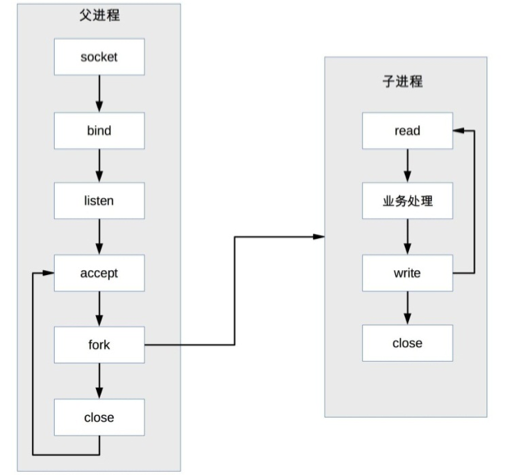
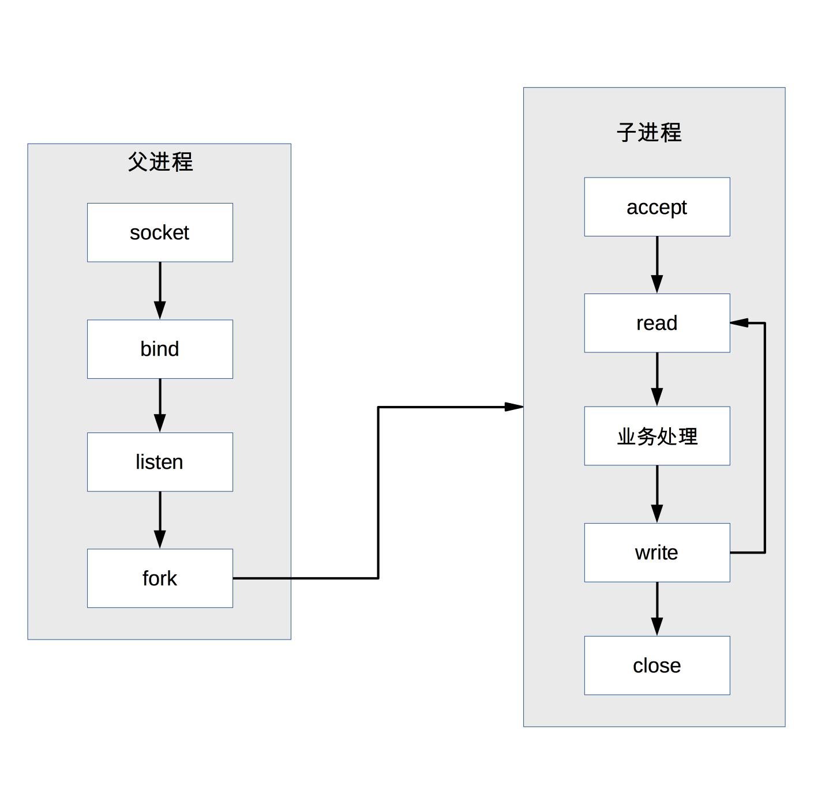

18 | 单服务器高性能模式：PPC与TPC
高性能是每个程序员的追求，无论我们是做一个系统还是写一行代码，都希望能够达到高性能的效果，而高性能又是最复杂的一环，磁盘、操作系统、CPU、内存、缓存、网络、编程语言、架构等，每个都有可能影响系统达到高性能，一行不恰当的 debug 日志，就可能将服务器的性能从 TPS 30000 降低到 8000；一个 tcp_nodelay 参数，就可能将响应时间从 2 毫秒延长到 40 毫秒。因此，要做到高性能计算是一件很复杂很有挑战的事情，软件系统开发过程中的不同阶段都关系着高性能最终是否能够实现。
站在架构师的角度，当然需要特别关注高性能架构的设计。高性能架构设计主要集中在两方面：
除了以上两点，最终系统能否实现高性能，还和具体的实现及编码相关。但架构设计是高性能的基础，如果架构设计没有做到高性能，则后面的具体实现和编码能提升的空间是有限的。形象地说，架构设计决定了系统性能的上限下限。
单服务器高性能的关键之一就是服务器采取的并发模型，并发模型有如下两个关键设计点：
以上两个设计点最终都和操作系统的 I/O 模型及进程模型相关。
在下面详细介绍并发模型时会用到上面这些基础的知识点，所以我建议你先检测一下对这些基础知识的掌握情况，更多内容你可以参考《UNIX 网络编程》三卷本。今天，我们先来看看单服务器高性能模式：PPC 与 TPC。
PPC 是 Process Per Connection 的缩写，其含义是指每次有新的连接就新建一个进程去专门处理这个连接的请求，这是传统的 UNIX 网络服务器所采用的模型。基本的流程图是：

注意，图中有一个小细节，父进程“fork”子进程后，直接调用了 close，看起来好像是关闭了连接，其实只是将连接的文件描述符引用计数减一，真正的关闭连接是等子进程也调用 close 后，连接对应的文件描述符引用计数变为 0 后，操作系统才会真正关闭连接，更多细节请参考《UNIX 网络编程：卷一》。
PPC 模式实现简单，比较适合服务器的连接数没那么多的情况，例如数据库服务器。对于普通的业务服务器，在互联网兴起之前，由于服务器的访问量和并发量并没有那么大，这种模式其实运作得也挺好，世界上第一个 web 服务器 CERN httpd 就采用了这种模式（具体你可以参考https://en.wikipedia.org/wiki/CERN_httpd）。互联网兴起后，服务器的并发和访问量从几十剧增到成千上万，这种模式的弊端就凸显出来了，主要体现在这几个方面：
PPC 模式中，当连接进来时才 fork 新进程来处理连接请求，由于 fork 进程代价高，用户访问时可能感觉比较慢，prefork 模式的出现就是为了解决这个问题。
顾名思义，prefork 就是提前创建进程（pre-fork）。系统在启动的时候就预先创建好进程，然后才开始接受用户的请求，当有新的连接进来的时候，就可以省去 fork 进程的操作，让用户访问更快、体验更好。prefork 的基本示意图是：

prefork 的实现关键就是多个子进程都 accept 同一个 socket，当有新的连接进入时，操作系统保证只有一个进程能最后 accept 成功。但这里也存在一个小小的问题：“惊群”现象，就是指虽然只有一个子进程能 accept 成功，但所有阻塞在 accept 上的子进程都会被唤醒，这样就导致了不必要的进程调度和上下文切换了。幸运的是，操作系统可以解决这个问题，例如 Linux 2.6 版本后内核已经解决了 accept 惊群问题。
prefork 模式和 PPC 一样，还是存在父子进程通信复杂、支持的并发连接数量有限的问题，因此目前实际应用也不多。Apache 服务器提供了 MPM prefork 模式，推荐在需要可靠性或者与旧软件兼容的站点时采用这种模式，默认情况下最大支持 256 个并发连接。
TPC 是 Thread Per Connection 的缩写，其含义是指每次有新的连接就新建一个线程去专门处理这个连接的请求。与进程相比，线程更轻量级，创建线程的消耗比进程要少得多；同时多线程是共享进程内存空间的，线程通信相比进程通信更简单。因此，TPC 实际上是解决或者弱化了 PPC fork 代价高的问题和父子进程通信复杂的问题。
TPC 的基本流程是：
注意，和 PPC 相比，主进程不用“close”连接了。原因是在于子线程是共享主进程的进程空间的，连接的文件描述符并没有被复制，因此只需要一次 close 即可。
TPC 虽然解决了 fork 代价高和进程通信复杂的问题，但是也引入了新的问题，具体表现在：
除了引入了新的问题，TPC 还是存在 CPU 线程调度和切换代价的问题。因此，TPC 方案本质上和 PPC 方案基本类似，在并发几百连接的场景下，反而更多地是采用 PPC 的方案，因为 PPC 方案不会有死锁的风险，也不会多进程互相影响，稳定性更高。
TPC 模式中，当连接进来时才创建新的线程来处理连接请求，虽然创建线程比创建进程要更加轻量级，但还是有一定的代价，而 prethread 模式就是为了解决这个问题。
和 prefork 类似，prethread 模式会预先创建线程，然后才开始接受用户的请求，当有新的连接进来的时候，就可以省去创建线程的操作，让用户感觉更快、体验更好。
由于多线程之间数据共享和通信比较方便，因此实际上 prethread 的实现方式相比 prefork 要灵活一些，常见的实现方式有下面几种：

Apache 服务器的 MPM worker 模式本质上就是一种 prethread 方案，但稍微做了改进。Apache 服务器会首先创建多个进程，每个进程里面再创建多个线程，这样做主要是为了考虑稳定性，即：即使某个子进程里面的某个线程异常导致整个子进程退出，还会有其他子进程继续提供服务，不会导致整个服务器全部挂掉。
prethread 理论上可以比 prefork 支持更多的并发连接，Apache 服务器 MPM worker 模式默认支持 16 × 25 = 400 个并发处理线程。
今天我为你讲了传统的单服务器高性能模式 PPC 与 TPC，希望对你有所帮助。
这就是今天的全部内容，留一道思考题给你吧，什么样的系统比较适合本期所讲的高性能模式？原因是什么？